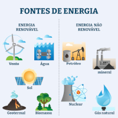

Home
O que é
Fontes
Aplicações
Fontes de energia térmica
As principais fontes de energia térmica incluem:
Combustíveis fósseis:
Carvão, petróleo e gás
Energia nuclear:
...
Biomassa:
...
Energia geotérmica:
...
Energia solar:
...

Voltar ao início